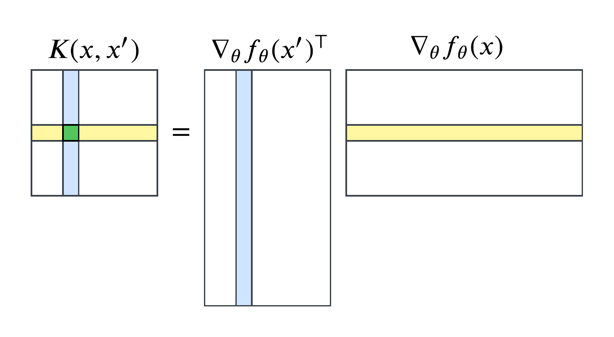

The neural tangent kernel (NTK) is a fascinating object that has garnered a lot of attention in the theoretical deep learning community over the past few years. It was first introduced in the 2018 paper "Neural Tangent Kernel: Convergence and Generalization in Neural Networks" by Arthur Jacot, Franck Gabriel, and Clément Hongler. The NTK provides a way to analyze the training dynamics of neural networks (NNs) in a certain infinite-width limit, allowing us to understand how NNs learn and generalize from data.
Lilian Weng has an excellent explanation of the math of the NTK, which is probably a more useful read to most people than the original paper is. I'd highly recommend it for an in-depth rigorous introduction. Here, I want to focus on the intuition for why we care about the NTK in the first place, what interesting geometric properties it follows, and what useful results it could get us.
The NTK is essentially motivated by the fact that NNs, especially in their training dynamics, are highly nonlinear and difficult to analyze. By "difficult to analyze," we mean that we can't use existing analytical techniques to mathematically guarantee desirable properties about it, like that it will converge to a good minimum or generalize well to unseen data. It's really nice when numerical methods have these end-to-end guarantees, since we can prove that certain restrictions on our inputs will achieve some required degree of accuracy in our outputs. By and large we can't do this with NNs.
We can, however, use these techniques on an earlier, simpler class of models called kernel machines, which have been periodically studied since the 1960s. The NTK aims to cast NNs as kernel machines under certain assumptions and analyze them in this regime. It falls under a broad category of making something we don't understand look like something we do understand, which is generally a pretty good approach, as long as you can bound your approximation error.
Setup & basic mathematics
Dimensionality
We begin with a parameterized neural network \(f_{\theta}: \X \to \Y\), where \(X =\R^{\din}\), \(\Y=\R^{d_\out},\) and the network's parameters \(\theta\) live in a parameter space \(\Theta\), often \(\R^P\).
The \(P\) figure represents a "flattening" of all the weights and biases in the network, and is usually quite large. Suppose we start with an input vector \(x\) of dimension \(\din d_0\) and set \(A^{(0)}(x) = x\). To get from layer \(\ell\) (with width \(d_{\ell}\)) to the next layer \(\ell+1\) (with width \(d_{\ell+1}\)) involves the operation \[ A^{(\ell + 1)}(x) = \sigma(W^{(\ell)} A^{(\ell)}(x) + b^{(\ell)}), \] where \(\sigma(\cdot)\) is a nonlinear activation function like ReLU or tanh, and \(W^{(\ell)}\) and \(b^{(\ell)}\) are the weights and biases at layer \(\ell\). In order to get the vector \(A^{(\ell)}(x)\) from dimension \(d_{\ell}\) to dimension \(d_{\ell+1}\), the dimension of the weight matrix \(W^{(\ell)}\) must be \(d_{\ell+1} \times d_{\ell}\). Now, the bias vector \(b^{(\ell)}\) has dimension \(d_{\ell+1}\), so that the whole quantity \(W^{(\ell)} A^{(\ell)}(x) + b^{(\ell)}\) is itself a vector of shape \((d_\ell+1) \cdot d_{\ell+1}\). The final output of the network is \(f_{\theta}(x) = A^{(L)}(x)\), where \(L\) is the number of layers, and the quantity \(P\) –– the total number of parameters we need to learn –– is the sum \(\sum_{\ell=0}^{L-1} (d_\ell + 1) \cdot d_{\ell+1} =: P\). We therefore say that \(\Theta\), the space where the flattened parameters live, is \(\R^P\).
The Jacobian
The Jacobian is the matrix computed by taking the derivative of a vector-valued function with respect to each element of its input. For our function \(f_{\theta}\), with \(\theta\) in \(\R^P\), and an input vector \(x \in \R^{\din}\), the Jacobian with respect to the parameters is given by \begin{equation} J_{\theta}(x) = \frac{\partial f_{\theta}(x)}{\partial \theta} = \begin{bmatrix} \frac{\partial f_1}{\partial \theta_1} & \frac{\partial f_1}{\partial \theta_2} & \cdots & \frac{\partial f_1}{\partial \theta_P} \\ \frac{\partial f_2}{\partial \theta_1} & \frac{\partial f_2}{\partial \theta_2} & \cdots & \frac{\partial f_2}{\partial \theta_P} \\ \vdots & \vdots & \ddots & \vdots \\ \frac{\partial f_{d_\out}}{\partial \theta_1} & \frac{\partial f_{d_\out}}{\partial \theta_2} & \cdots & \frac{\partial f_{d_\out}}{\partial \theta_P} \end{bmatrix} \in \mathbb{R}^{d_\out \times P}. \label{eqn:jacboian} \end{equation} The gradient vector \(\nabla_{\theta} f_{\theta}(x)\) is the transpose of this Jacobian and has shape \(P \times d_\out\).
Kernels
In the scalar-valued case \(\Y = \R\), a positive-definite kernel on a set \(\X\) is a function \(k: \X \times \X \to \R\) that is
- symmetric: \(k(x, x') = k(x', x)\) for all \(x, x' \in \X\), and
- positive semi-definite: for any \(x_i\) and \(x_j\) in \(\X\), \(n\) in \(\mathbb{N}\), and real numbers \(r_1, \ldots, r_n \in \R\), we have \(\sum_{i=1}^m \sum_{j=1}^m r_i k(x_i, x_j) r_j \geq 0\).
Kernels are often used to measure similarity between two inputs \(x\) and \(x'\). The radial basis function (RBF) kernel, given by \(k(x, x') = \exp(-\|x - x'\|^2 / (2 \sigma^2))\) for some bandwidth parameter \(\sigma\), is a common example in machine learning: it outputs values close to 1 when \(x\) and \(x'\) are close together, and values close to 0 when they are far apart.
Hilbert spaces
Kernels can often be decomposed into the inner product of a feature map \(\phi: \X \to \H\) to itself, where \(\H\) is a (possibly infinite-dimensional) Hilbert space. Mercer's theorem guarantees that such a map exists if \(k\) is continuous and positive-definite. In this case, we have \(k(x, x') = \langle \phi(x), \phi(x') \rangle_\H\), where \(\langle \cdot, \cdot \rangle_\H\) is the inner product in \(\H\).
The study of Hilbert spaces is especially important because the inner product of a well-defined Hilbert space is itself a positive-definite kernel. Furthermore, if \(\H\) is the Hilbert space of functions from \(\X\) to \(\Y\), and the point-evaluation functional \(L_x: \H \to \Y\) such that \(L_x(f) = f(x)\) is continuous for all \(x \in \X\), then \(\H\) is a reproducing kernel Hilbert space (RKHS) with inner product \(\langle \cdot, \cdot \rangle_\H\), and there exists a kernel \(k(x, x')\) on \(\X\) whose partial application \(k(x, \cdot)\) satisfies \begin{equation}\langle f(\cdot), k(x, \cdot) \rangle_\H = f(x) \text{ for all } f \in \H. \label{eqn:reproducing}\end{equation}
Just as an RKHS implies the existence a reproducing kernel, we can go the other way, too: a kernel \(k(\cdot, \cdot)\) that satisfies the properties above defines a unique RKHS by the Moore-Aronszajn theorem.
Example: Finite Fourier kernel
As an example, let's look at the finite Fourier kernel, \[k(x, x') = \sum_{n=1}^N \cos(n(x-x')),\] defined on \(\R^d \times \R^d\) for some finite \(N\). This kernel has the explicit feature map \[ \phi(x) = (\cos(x), \cos(2x), \ldots, \cos(Nx), \sin(x), \sin(2x), \ldots, \sin(Nx)), \] so that, by the \(\cos(x-y)\) identity, \[\langle \phi(x), \phi(x') \rangle = \sum_{k=1}^N [\cos(nx)\cos(nx') + \sin(nx)\sin(nx')] = \sum_{n=1}^N \cos(n(x-x')) = k(x,x').\]
Let \(\H\) be the linear span of the set \(\{k(x, \cdot) : x \in \R^n\}\) –– that is, all finite linear combinations of the form \(f(x) = \sum_{i=1}^n \alpha_i \cos(k(x_i - x))\) for some \(n\), coefficients \(\alpha_i\), and points \(x_i\). In order for property (\ref{eqn:reproducing}) to hold for any two functions \(f_a =\sum_{i=1}^n a_i k(x_i, \cdot)\) and \(f_b = \sum_{i=1}^n b_i k(x_i, \cdot)\), we need to define the inner product \(\langle \cdot, \cdot \rangle_\H\) on \(\H\) given by \[ \left\langle f_a, f_b \right\rangle_\H = \sum_{i=1}^n \sum_{j=1}^m a_i b_j \left\langle k(x_i, \cdot), k(x_j, \cdot) \right\rangle_\H \] to satisfy the equality \begin{equation}\langle k(x_i, x), k(x_j, x) \rangle_\H = k(x_i, x_j).\label{eqn:kernel-equality}\end{equation} In this case, the dot product \(\langle a,b \rangle_{\H_0} = a \cdot b\) works just fine: \[ \begin{aligned} \langle k(x_i, y), k(x_j, y) \rangle_\H &=\Big\langle \sum_{n=1}^N \big[\cos(n x_i)\cos(ny) + \sin(n x_i)\sin(ny)\big],\\ &\qquad \sum_{m=1}^N \big[\cos(m x_j)\cos(my) + \sin(m x_j)\sin(my)\big] \Big\rangle \\ &= \sum_{n=1}^N \sum_{m=1}^N \Big[ \cos(n x_i)\cos(m x_j)(\cos(ny) \cdot \cos(my)) \\ &\qquad\qquad\;\, + \sin(n x_i)\sin(m x_j)(\sin(ny) \cdot \sin(my)) \Big]. \\ &=\sum_{n=1}^N \Big[ \cos(n x_i)\cos(n x_j) + \sin(n x_i)\sin(n x_j) \Big] \\ &=\sum_{n=1}^N \cos\big(n(x_i - x_j)\big) = k(x_i, x_j), \end{aligned} \] where the third step follows by the orthogonality of sine and cosine, so that only the terms with \(n=m\) are nonzero.
Since \(\{\sin(x), \cos(x)\}\) is a basis for \(\H\), any function in \(\H\) can be written as \(f(x)=\sum_{i=1}^\infty a_i k(x_i, x)\), a linear combination of these basis functions (indeed this is true for any kernel). Checking our claimed property –– that functions are reproduced by the inner product with the kernel –– we have \[\begin{align*} \langle f(y), k(x, y) \rangle_\H &= \left\langle \sum_i \alpha_i k(x_i, y), k(x, y) \right\rangle_\H\\ &= \sum_i \alpha_i \langle k(x_i, y), k(x, y) \rangle_\H\\ &= \sum_i \alpha_i k(x_i, x)\\ &= f(x). \end{align*}\]
Thus the "reproducing" property given by (\ref{eqn:reproducing}) is satisfied, and \(\H\) is indeed an RKHS with reproducing kernel \(k(\cdot, \cdot)\).
This example is, admittedly, somewhat contrived: the explicit form I showed here works only when the kernel has an explicit feature decomposition \(k(x, x') = \langle \phi(x), \phi(x') \rangle_\H\), which supplies a finite-dimensional \(\H\). For other valid kernels, like the RBF kernel, the corresponding RKHS is infinite-dimensional, and we need to guarantee property (\ref{eqn:kernel-equality}) by definition, rather than construction.
Matrix-valued kernels
When \(f: \X \to \Y\) is vector-valued with \(\Y = \R^{d_\out}\), the kernel \(K(\cdot, \cdot)\) (here denoted with a capital \(K\)) is matrix-valued, \(K: \X \times \X \to \R^{d_\out \times d_\out}\). The properties of symmetry and positive-definiteness still hold, but are defined in terms of matrix operations. Symmetry means that \(K(x, x') = K(x', x)^\top\) for all \(x, x' \in \X\), and positive-definiteness means that for any \(x_i\) and \(x_j\) in \(\X\), \(n\) in \(\mathbb{N}\), and vectors \(r_1, \ldots, r_n \in \R^{d_\out}\), we have \(\sum_{i=1}^m \sum_{j=1}^m r_i^\top K(x_i, x_j) r_j \geq 0\).Kernel machines
A kernel machine is a type of learning algorithm that doesn't have paramters. Instead, for labeled dataset \((X,Y) = ((x_1, y_1), (x_2, y_2), \ldots, (x_n, y_n))\) and a given kernel \(k(\cdot, \cdot)\), we can frame the prediction \(f(x_*)\) on a test input \(x_*\) by leveraging the RKHS structure above: we approximate our true \(f\) by some \(f_K \in \H\), the RKHS defined by \(k\), a finite linear combination of kernels with coefficients \(\mathbf{\alpha} = [\alpha_1, \ldots, \alpha_n]\): \[f(x_*) := \sum_{i=1}^n \alpha_i k(x_i, x_*).\] This form coincides with the predictive mean \begin{equation}\label{eqn:pred-mean} \mu(x_*) = k(x_*, X)[k(X,X) + \lambda I]^{-1} y \end{equation} solved for in kernel ridge regression for some regularization parameter \(\lambda\), where \(\alpha = [k(X,X) + \lambda I]^{-1} y\) is explicitly solved for. The supposition that we can approximate functions in this form will be critical for further analysis.
The neural tangent kernel
The neural tangent kernel itself is a deceptively simple object. Given a parameterized network \(f_{\theta}\), the NTK at parameters \(\theta\) is defined as \[k(x, x') = \langle \nabla_{\theta} f_{\theta}(x), \nabla_{\theta} f_{\theta}(x') \rangle.\] In Euclidean space, the dimension of the NTK depends on the dimensions of the parameters and the output. If the output dimension is 1 (i.e., \(f_\theta\) is a scalar-valued function), then \(\nabla_\theta f(x)\) is a vector of size \(P\), and the NTK is just a real number given by \[\sum_{p=1}^P \frac{\partial f_{\theta}(x)}{\partial \theta_p} \frac{\partial f_{\theta}(x')}{\partial \theta_p}.\] If the output dimension is \(d_\out>1\), then \(\nabla_\theta f_\theta\) is a matrix of shape \(P \times d_\out\), and the NTK is an \(d_\out \times d_\out\) matrix whose (\(i,j\)) entry is given by \[K_{ij} = \sum_{p=1}^P \frac{\partial f_{\theta_i}(x)}{\partial \theta_p} \frac{\partial f_{\theta_j}(x')}{\partial \theta_p}.\]This means that, in Euclidean space, the inner product is literally the dot product for scalar-valued functions, while for vector-valued functions, the the NTK's entries are given by the dot product of the corresponding rows of \(\nabla_\theta f_\theta(x)\) and \(\nabla_\theta f_\theta(x')^\top\):
The NTK regime
The Taylor expansion of a neural network around a set of parameters \(\theta_0\) is given by \[ f_{\theta}(x) = f_{\theta_0}(x) + \nabla_{\theta} f_{\theta_0}(x) \cdot (\theta - \theta_0) + O(\|\theta - \theta_0\|^2). \] In the limit as the width of each layer of the network goes to infinity, Jacot et al. show that during training, the model enters the NTK regime, where the following equivalent conditions are satisfied:
- Higher order terms \(O(\|\theta - \theta_0\|^2)\) become negligible,
- The model approaches its linear approximation \begin{equation}\label{eqn:lin} f_{\theta}(x) \to f_{\theta_0}(x) + \nabla_{\theta} f_{\theta_0}(x) \cdot (\theta - \theta_0) \end{equation}, and
- The model lives in the RKHS \(\H_K\) defined by its NTK, and can therefore be written \[f_\theta(x) = \sum_{i=1}^\infty \alpha_i k(x_i, x).\]
Where does the NTK show up?
One reason the NTK is interesting is that it naturally "falls out" of some important scenarios. Consider the view of NN training as a differential equation in time, where, as a stand-in for discrete training steps, we track how the network \(f_{\theta}(x)\) changes continuously as a function of time \(t\) using the derivative \(\frac{d f_{\theta}(x)}{dt}\). We can also track how the parameters \(\theta\) change as a function of time using \(\frac{d \theta}{dt}\).
To paraphrase Weng, consider an empirical loss function of our parameters \(\cL: \R^P \to \R_{\geq 0}\) as the average of a per-sample loss function \(\ell: \R^{d_\out} \times \R^{d_\out} \to \R_{\geq 0}\) over a dataset \(\{x_i\}_{i=1}^n\), where \[ \cL(\theta) = \frac{1}{n} \sum_{i=1}^n \ell[f_\theta(x_i), y_i].\] Then, taking the gradient using the chain rule with something like \(\frac{\partial \cL(\theta)}{\partial \theta} = \frac{\partial \cL(\theta)}{\partial f} \cdot \frac{\partial f}{\partial \theta}\) gives \[ \nabla_{\theta} \cL(\theta) = \frac{1}{n} \sum_{i=1}^n \nabla_{\theta} f_\theta(x_i) \cdot \nabla_f \ell[f_\theta(x_i), y_i]. \] Then, since the gradient flow \(\frac{d \theta}{dt}\) is given by \(-\nabla_{\theta} \cL(\theta)\), we have by the chain rule that \[ \frac{d f_\theta(x)}{dt} = \nabla_{\theta} f_\theta(x) \cdot \frac{d \theta}{dt} = -\frac{1}{n} \sum_{i=1}^n \underbrace{\nabla_{\theta} f_\theta(x) \cdot \nabla_{\theta} f_\theta(x_i)}_{\text{NTK!}} \cdot \nabla_f \ell[f_\theta(x_i), y_i]. \] This matches the form of (\ref{eqn:ntk-deriv}), where \(f(x_i) - y_i = \nabla_f \ell[f_\theta (x_i), y_i]\).
Spaces and the original formulation
Later literature often assumes the existence of a parameterized network \(f_{\theta}\). But Jacot et al. begin their paper by introducing a realization function \(\Phi: \Theta \to (X \to Y)\), where \(\F := \Phi(\Theta)\) is the subset of functions from \(\X\) to \(\Y\) that can be realized by some parameter \(\theta\) in the parameter space \(\Theta\), usually taken to be \(\R^P\). They then define the NTK as \[ K_\theta(x,x') = \sum_{p=1}^P \partial_{\theta_p} \Phi (\theta)(x) \otimes \partial_{\theta_p} \Phi(\theta)(x') = \sum_{p=1}^P \langle \partial_{\theta_p} \Phi(\theta)(x), \partial_{\theta_p} \Phi(\theta)(x') \rangle_{\R^d}.\]
This notation reveals the relationship between the several spaces here. For a given set of parameters \(\theta\), consider the tangent space \(\T_{\theta} \Theta\), of which an element \(\delta \theta\) is some magnitude of movement in some direction away from \(\theta\). This space is spanned by a set of basis vectors \(\{e_p = \partial_{\theta_p}\}\).
Furthermore, for an element \(f_{\theta}\) in the set of realized functions \(\F = \{\Phi(\theta): \theta \in \Theta\}\), we can also consider the tangent space \(\T_{f_{\theta}} \F\), which consists of all infinitesimal changes to the function \(f_{\theta}\). By our definition of \(\F\), these changes can be achieved by changing \(\theta\) by some infinitesimal amount \(\delta \theta\).
The NTK moves through these spaces first by considering a set of parameters \(\theta \in \Theta\), realizing them into \(\F\) via \(\Phi\), and finally bringing us into the tangent space of functions \(\T_{f_{\theta}} \F\) by applying the basis elements \(\partial_{\theta_p}\) of \(\T_{\theta} \Theta\) to \(\Phi(\theta)\).
The connection between the two tangent spaces themselves is articulated by the differential (pushforward) of the realization map: \[ d_{\theta} \Phi: \T_{\theta} \Theta \to \T_{f_{\theta}} \F, \] which, by definition, maps \(\delta \theta \mapsto \sum_{p=1} \partial_{\theta_p} \Phi(\theta) \cdot \delta \theta_p \). This allows us to formalize the tangent space of the function space as: \[ \T_{f_\theta} \F = \left\{\delta f : \delta f(x) = \sum_{p=1}^P \partial_{\theta_p} \Phi(\theta)(x) \cdot \delta \theta_p, \delta \theta \in \T_\theta \Theta \right\}. \]
The data space
There are two important spaces we're leaving out: the input and output spaces \(\X\) and \(\Y\). In one sense, \(\X\) and \(\Y\) have passive roles as the domain and codomain of the network \(f_{\theta}\). In another sense, \(\X\) and \(\Y\) are active spaces that meaningfully affect and are affected, respectively, by variations in the other spaces. This distinction shows up in the difference between \(\T_x \X\), an element \(\delta x\) of which is a small change to the input point \(x\), and \(\T_{f_{\theta}} \F\), an element \(\delta f_{\theta}\) of which is a small change to the entire function \(f_{\theta}\), which itself induces a variational change in the output space \(\Y\) via \(\delta y = \delta f_{\theta}(x)\).The pushforward from \(\F\) to \(\Y\) is given by the evaluation functional at \(x\), \(\ev_x: \F \to \Y\), where \(\ev_x(f) = f(x)\), so that the differential from \(\T_{f_{\theta}} \F\) to \(\T_{f_{\theta}(x)} \Y\) is given by \(d (\ev_x)\).
Effects of variation on an input are a bit more complex, but in a fixed-training setting, infinitesimal changes in the input space affect changes in the output space directly using the differential of the network evaluation \(f_\theta: \X \to \Y\).
This can be summarized in a football-looking diagram that connects the several spaces:
What is the NTK good for?
We've spent some time building up important properties of the NTK. These are:
- It arises naturally in the training dynamics of neural networks.
- It is a positive-definite kernel and induces an RKHS.
- It connects several important spaces: the parameter space \(\Theta\), the function space \(\F\), and the input/output spaces \(X\) and \(Y\).
Adversarial robustness
(Much of the following is taken from Tsilivis and Kempe's "What Can the Neural Tangent Kernel Tell Us About Adversarial Robustness?")
A network that is adversarially robust is resistant to small, carefully designed perturbations to its inputs that cause misclassification. For example, an image classifier that is adversarially robust would not change its predicted label if a small amount of noise were added to the input image. Using Tsilivis and Kempe's example:
 Here, adversarial examples are decomposed as input perturbations of different features used in model output.
Adversarial robustness is an important property for safety-critical applications like autonomous driving and medical diagnosis, where misclassifications can have serious consequences. Adversarial attacks rely particularly on understanding the features extracted by a model's first few layers, from which one can reverse-engineer attacks that look visually similar in input space while significantly perturbing the feature space. The main tension in this field is retaining features that are both robust and useful.
Here, adversarial examples are decomposed as input perturbations of different features used in model output.
Adversarial robustness is an important property for safety-critical applications like autonomous driving and medical diagnosis, where misclassifications can have serious consequences. Adversarial attacks rely particularly on understanding the features extracted by a model's first few layers, from which one can reverse-engineer attacks that look visually similar in input space while significantly perturbing the feature space. The main tension in this field is retaining features that are both robust and useful.
Consider a training run defined in its differential form (\ref{eqn:ntk-deriv}) on a labeled dataset \((X,Y)\) whose elements \((x,y)\) are taken from a data distribution \(\mathcal{D}\). It turns out that we can use the NTK to decompose the prediction on a test point \(x_*\) as \(t \to \infty\) as \[f_\infty(x_*) = \sum_{i=1}^n f^{(i)}(x_*),\] where each feature function is defined as \[ f^{(i)}(x_*) = \lambda_i^{-1} K(x_*, X)^\top \v_i \v_i^\top Y.\] Here, \(K(x_*, X) = \sum_{i=1}^n \lambda_i \v_i \v_i^\top\) is the eigendecomposition of the NTK Gram matrix, and the \(\lambda^{-1}\) term means that smaller eigenvalues generally correspond to more important features.
Tsilivis & Kempe then characterize each feature \(f^{(i)}\) by two properties that quantify the tension between usefulness and robustness:
- \(f^{(i)}\) is \(\rho\)-useful if \[\mathbb{E}_{(x,y) \sim \mathcal{D}} \left[\mathbb{1}_{\sign [f^{(i)}(x)] = y} \right] = \rho.\]
- \(f^{(i)}\) is \(\gamma\)-robust if, over some allowed perturbation ball \(B\), \[\mathbb{E}_{(x,y) \sim \mathcal{D}} \left[ \inf_{\delta \in B} \mathbb{1}_{\sign [f^{(i)}(x + \delta)] = y} \right] = \gamma.\]
Input gradients
The adversarial robustness of a network \(f_\theta\) at a point \(x\) particularly relies on the input sensitivity measurement given by \(\nabla_x f_\theta (x)\). This gives the direction in the data space \(\X\) in which movement causes the largest change to the model's output; a 'brittle' model exhibits high input sensitivity and can therefore be fooled by minimal input modifications.
Out-of-distribution generalization
Measuring a model's ability to make correct, confident predictions on points outside its training distribution is the core of out-of-distribution (OOD) analysis. The traditional approach is simply to train the model and measure its outputs, but the NTK lets us do this in a more intelligent way. For a kernel \(k\) trained on the labeled dataset \((X,Y)\), recall the predictive mean on a test point \(x_*\) given in Eqn. (\ref{eqn:pred-mean}): \[ \mu(x_*) = k(x_*, X)[k(X,X) + \lambda I]^{-1} Y.\]We measure the confidence of this prediction using the NTK's predictive variance (or epistemic uncertainty), which Calvo-Ordoñez et al. decompose as: \begin{equation}\label{eqn:pred-var} \Var[f(x_*)] = \underbrace{k(x_*, x_*)}_{\text{prior uncertainty}} - \quad \underbrace{k(x_*, X)[k(X,X) + \lambda I]^{-1} k(X, x_*)}_{\text{information from training data}}. \end{equation} This form allows us to quantify exactly how model confidence changes (usually decreases) as the inputs stray further from the training distriubtion. When the test point \(x_*\) is far from the training distribution, \(k(x_*, X)\) is small, whereby \(\Var[f(x_*)] \approx k(x_*, x_*)\), which is often large, providing a kind of "OOD score''. This quantity is admittedly expensive to compute naïvely, but its form is far more analytically tractable than gradient descent.
Kobayashi et al. use the NTK to analyze the predictive variance of ensemble models, which present further challenges for gradient-descent-based analysis. Given an ensemble model \(f\) of \(M\) network parameters with different initializations \(\{\theta^{(m)}\}_{m=1}^M\), the predictive mean can be decomposed into a sum whose terms converge at predictable rates.
Wilson et al. build these observations into the Neural Uncertainty Quantification by Linearized Sampling (NULQS) method, whose outputs represent "draws from the approximate posterior of the neural network, which is equivalent to a GP defined by the NTK" without ever having to compute these posteriors explicitly. In particular, the method
- Linearizes a network \(f_{\theta_*}\) around a trained set of parameters \(\theta_*\) according to Eqn. (\ref{eqn:lin}),
- Samples from the posterior over \(\theta\) by running SGD from different random initializations of the linearized network to obtain \(m\) networks, and
- Estimates variance empirically from the ensemble of linearized models according to (\ref{eqn:pred-var}).
Look-ahead computation
Often we want to look ahead to a model's output a few steps into the future. This is common in bilevel optimization problems, and it often brings the inconvenient requirement that we backpropagate through each of the \(T_{\text{in}}\) inner loop steps \(T_\out\) times, scaling the complexity of bilevel optimization problems as \(O(T_{\text{in}} \cdot T_{\out} \cdot \text{other terms})\). We end up with a tradeoff between tractable computation and accurate inner loops.
We can reduce this \(T_{\text{in}}\) term by approximate how predictions will change over a number of steps analytically with the NTK. Nguyen et al.'s kernel inducing points (KIP) and later Loo et al.'s random feature approximation (RFA) distillation perform dataset distillation, framed as a bilevel optimization problem in which the inner loop trains a model to convergence on a distilled dataset, using the NTK on the inner loop.
KIP uses the NTK to compute the "look-forward" outputs directly, while RFA distillation replaces this NTK computation with the cheaper neural network Gaussian process (NNGP) kernel, approximated using random-feature approximation. Specifically, for a dataset \(X\), \(n\) neural networks with output dimension \(m\) are sampled as \[\hat{\Phi} = \frac{1}{\sqrt{nm}}[f_{\theta_1}(X), \ldots, f_{\theta_1}(n)]^\top.\] The kernel is formed by \(\hat{K} = \hat{\Phi}^\top \hat{\Phi}\), reducing cost from quadratic to linear in dataset size. Meta-learning is often framed in bilevel-optimization terms, giving us the same problem as above. In this case, for a new task with a labeled dataset \((X,Y)\), our adapted network becomes the familiar-looking \[f_{\text{adapted}}(X) = f_{\theta_0}(x) + k(x, X)[k(X,X) + \lambda I]^{-1} (y - f_{\theta_0}(X)).\]
References
Weng, L. (2022, September). Some math behind neural tangent kernel. Lil'Log. https://lilianweng.github.io/posts/2022-09-08-ntk/
Aronszajn, N. (1950). Theory of reproducing kernels. Transactions of the American Mathematical Society, 68(3), 337-404.
Tsilivis, N., & Kempe, J. (2023). What can the neural tangent kernel tell us about adversarial robustness? arXiv. https://arxiv.org/abs/2210.05577
Calvo-Ordoñez, S., Palla, K., & Ciosek, K. (2024). Epistemic uncertainty and observation noise with the neural tangent kernel. arXiv. https://arxiv.org/abs/2409.03953
Kobayashi, S., Vilimelis Aceituno, P., & von Oswald, J. (2022). Disentangling the predictive variance of deep ensembles through the neural tangent kernel. arXiv. https://arxiv.org/abs/2210.09818
Wilson, J., van der Heide, C., Hodgkinson, L., & Roosta, F. (2025). Uncertainty quantification with the empirical neural tangent kernel. arXiv. https://arxiv.org/abs/2502.02870
Nguyen, T., Chen, Z., & Lee, J. (2021). Dataset meta-learning from kernel ridge-regression. arXiv. https://arxiv.org/abs/2011.00050
Loo, N., Hasani, R., Amini, A., & Rus, D. (2022). Efficient dataset distillation using random feature approximation. arXiv. https://arxiv.org/abs/2210.12067